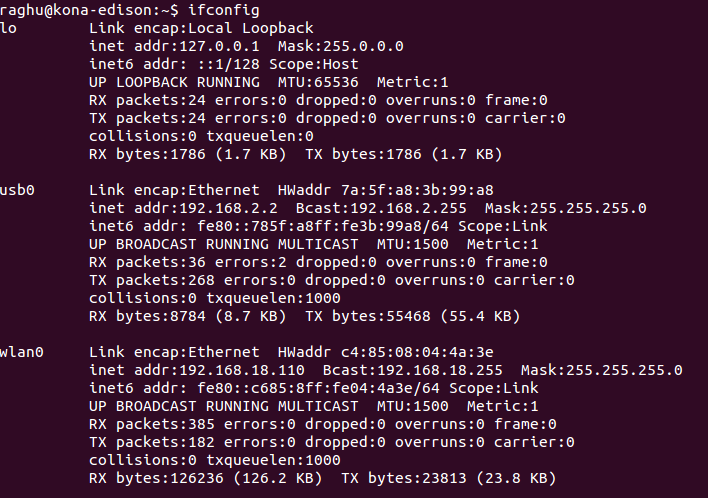

Forward usb0 connection
Use Terminal and the ifconfig command to forward connections to the IP address 192.168.2.2 through “usb0” which should be the USB cable.
-
Open a new Terminal window.
-
Make sure your IoT board has the microswitch set to device mode and plug in the device mode micro-USB cable from your Intel® Edison to your computer.
Wait one minute for the Intel® Edison to finish booting up.

Refer to Device mode micro-USB cable for full assembly instructions.
-
Use the
ifconfigcommand to forward connections to the IP address “192.168.2.2” through “usb0” which should be the USB cable. You may be prompted for your user password.sudo ifconfig usb0 192.168.2.2Can’t see usb0?
Try this command first:
sudo ifconfig usb0 up
If you type the ipconfig command, you should see “192.168.2.2” for the usb0 entry:

See Once connected… for what you can do now.